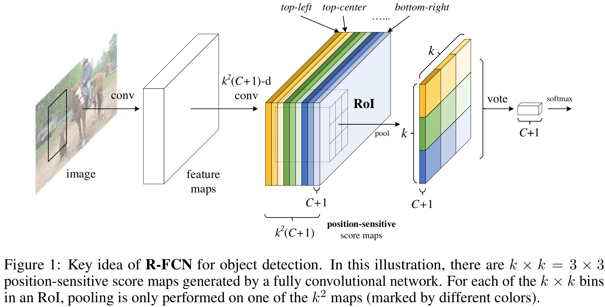
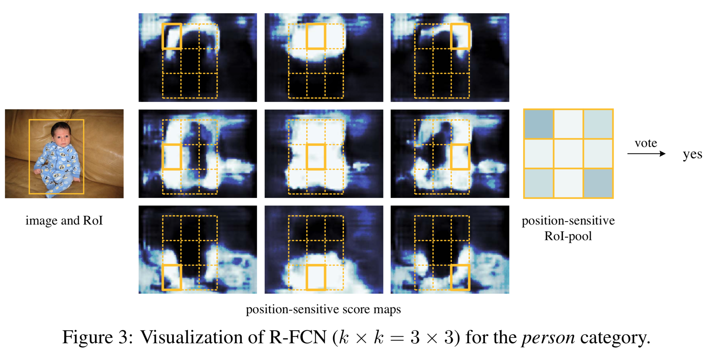
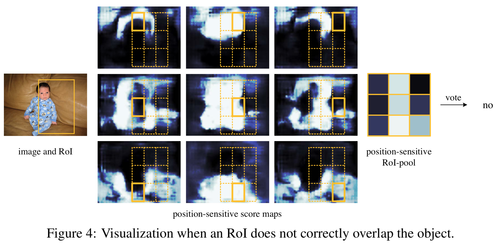
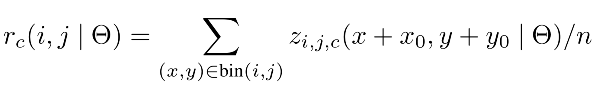

painterdrown Blog - painterdrown CV
⏰ 2018-05-30 21:07:51
👨🏻💻 painterdrown
在 Faster R-CNN 里面就有提到 FCN（全卷积网络） 这个概念，是指 RPN (Region-based Proposal Networks) 加上一个做 regress region bounds & objectness scores 的卷积层，就称为 FCN。这篇论文称其为 R-FCN，含义上没有什么大的差别。
这里先是说 Fast/Faster R-CNN 做目标检测时做的计算太多（每张图片选很个 region，导致了比较多的重复计算），然后说 R-FCN 只需计算一整张图片的 convolutional feature。
To achieve this goal, we propose position-sensitive score maps to address a dilemma between translation-invariance in image classification and translation-variance in object detection.
作者说，想要在 translation-invariance in image classification 和 translation-variance in object detection 之间达到一个 “dilemma（进退两难的窘境）” 的状态（实话说我也很纳闷，先往下看再说）。这样一来，这个网络就能自然地采用一些其他的骨干网络，比如 ResNets用于目标检测。
所以这里我的理解是，“dilemma” 是为了让 R-FCN 更好地适配不同的任务：加上 ResNet 就可以用于目标检测，加上 XXNet 就可以用作其他用途了。
传统的目标检测网络可以根据 RoI 吃化层划分为两种类型：
很多传统的分类网络 (AlexNet, VGG) 的架构都是：卷积子网络 (ending with a spatial pooling layer) 后面加上几个全连接层。
然而，state-of-the-art 的图像分类网络 (ResNets, GoogLeNet) 都是用的 FCN（全卷积网络），计算的时候会将 RoI 考虑进来。但是这种架构在实际使用的时候存在一个 “inferior detection accuracy（较差检测精度）” 的问题。ResNets 尝试在 Faster R-CNN 中的 RoI 池化层前后都插入 (unnaturally) 卷积层。这提升了精度，但由于 RoI 池化层的计算还不是共享的，所以会花费大量的计算时间。
上述提到了在精度和速度之间的两难境地，就是 Abstract 里面提到的 dilemma。图像分类 (image-level) 倾向于 translation invariance（转换不变性）——也就是说，在图像分类里面，图像转换如缩放、旋转等不应该影响分类结果。在另一方面，目标检测则更倾向于 translation variance（转换可变性）——也就是说，在做目标检测的时候，检测出来目标的位置会对图像转换敏感。这个很好理解，往往一张图片旋转缩放之后，图像里面目标的位置就变了，所以你检测的结果也应该随之而变。
ResNets 为了达到这个 dilemma，它在其检测流水线的卷积中插入了 RoI 池化层（这个操作是 region-specific 的）。这样一来就打破了 translation invariance，在后面的 RoI 池化层在多个不同 region 上就不会具有 translation-invariant。总而言之，ResNets 这样的设计牺牲了训练和测试的效率，因为涉及了大量的 region-wise layers（暂时不理解这种层是什么东西）。

回到正题，这篇论文提出了一个用于目标检测的框架——R-FCN。通过一系列的 position-sensitive score maps，将 translation variance 融入 FCN。每一个 score map 会对相对位置信息进行编码。在 FCN 的顶层，有一层 position-sensitive RoI pooling layer 对这些编码后的信息进行解译。R-FCN 是端到端的架构，所有的卷积层都共享一整张图片的计算。
R-FCN 用 ResNet-101 作为网络骨干，在 VOC 上的 mAP 达到了 82%！测试时，每张图片耗时 170ms，可以说非常优秀了！
首先看下 R-FCN 的整体架构：
R-FCN 也是通过 RPN 来获取 region proposals，后面对于每一个 RoI，都输出 k2(C+1)-channel 个分类结果。这里的 k2 是有讲究的：比如说 k = 3 时，k2 = 9 对于前面提到的 9 个 encoded 的相对位置 { top-left, top-center, top-right, …, bottom-right }。
R-FCN 的最后一层是 position-sensitive 的 RoI 池化层（有选择性的），其聚合了前面卷积层的输出并且对于每个 RoI 都生成分类得分。参考 Introduction 中的那张图片，中，每一个 RoI 从前面的 k2 个 score maps bank 中拿出自己每个位置的得分，然后进行投票，判断这个 RoI 是否属于某个分类。


ResNet-101（ImageNet 预训练得到） 去掉 average pooling layer 和最后的全连接层，留下卷积层来计算 feature maps。ResNet-101 最后一个卷积层是 2048 维的，为了降低维度，后面接上一个 1024 维的随机初始化的卷积层。然后再接上 k2(C + 1)-channel 的卷积层来生成 score maps。
每个 RoI 区域被分成 k×k 个网格，分别对应相对（相对于这个 RoI）的位置信息。每一个 RoI 从同一个 score maps 里面提出出各自的分类得分，每个 RoI 得到 k2 个得分之后，取平均来判断这个 RoI 为分类的概率。

对于 bounding box regression 也是采用类似的做法：先生成 4k2 的 regression maps（跟前面生成 k2(C + 1)-channel 的卷积层是 sibling 关系），再对每个 RoI 进行池化，投票。
跟 Fast R-CNN 类似，损失函数同时考虑分类和回归两个 task。首先假设每张图片有 N 个 proposals，前向计算其 loss，对结果进行排序，取前 B 个 RoI。然后做反向传播的时候只做这 B 个。由于每个 RoI 的计算时间可以忽略不计，因此前向的计算基本跟 N 没有关系。
R-FCN 使用的 0.0005 的 decay 和 0.9 的 momentum。默认地，训练只做一个图像尺寸，每张图片 resize 使其较短的边都是 600px。When doing fine-tune, using a learning rate of 0.001 for 20k mini-batches and 0.0001 for 10k mini-batches on VOC.
另外，我在 Medium 找到两篇关于解读以及实现 ResNets 的博客，感觉很不错：
最后，胆小的我发现论文里面这组图很有鬼片既视感，一起感受一下：